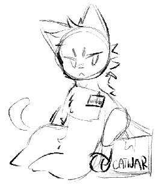

waRes / Главная
Фанатский проект по сбору информации CatWar.
Привет, путник! Добро пожаловать в waRes!
Что это?
waRes - персональный проект Тявки, цель которого - документация и архивирование полезных ресурсов, информации и даже событий, связанных с CatWar, но в понятном и доступном формате. waRes собирает информацию со множества источников, устанавливая их в одном месте. Так же называется waResource, WarResource и CatWar Resources.
Я могу помочь?
Да! На данный момент waRes находится в очень недоваренном состоянии, и любая информация приветствуется!
Где я могу узнать больше?
На странице "О сайте". Там же есть ответы на ваши вопросы!
Всем привет! Сайт онлайн. Надеюсь, он будет вам полезен.
Обновления
дд/мм/гг
а тут инфаНовости
текст
а тут инфа хочешь помочь проекту, но нету новой информации? расскажи о waRes друзьям! мы маленький проект, и будем благодарны, если как можно больше людей узнает о нас.
хочешь помочь проекту, но нету новой информации? расскажи о waRes друзьям! мы маленький проект, и будем благодарны, если как можно больше людей узнает о нас.